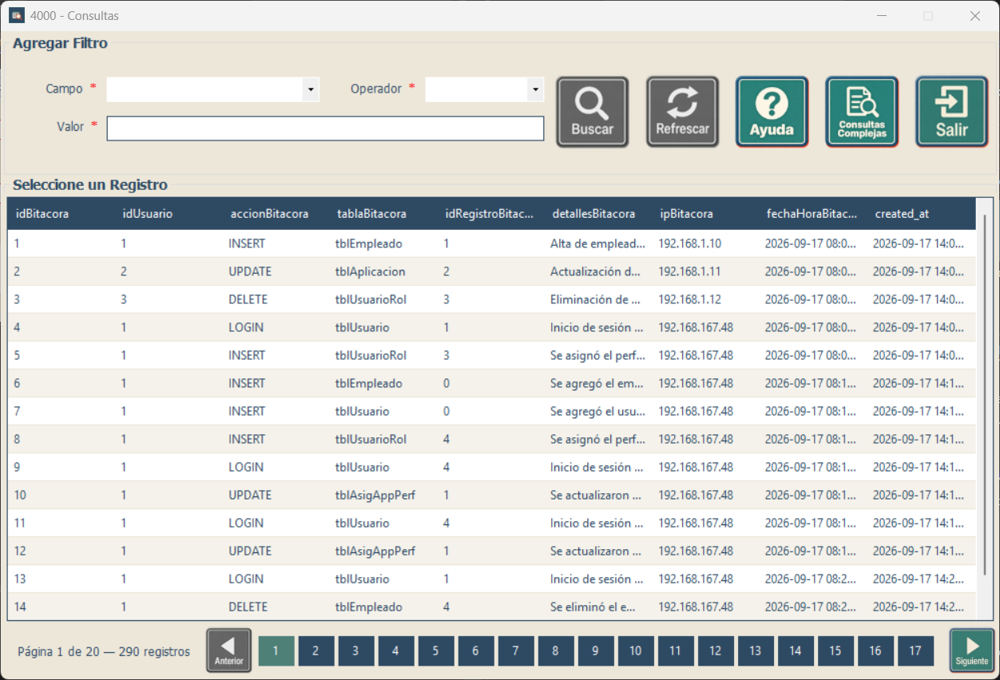
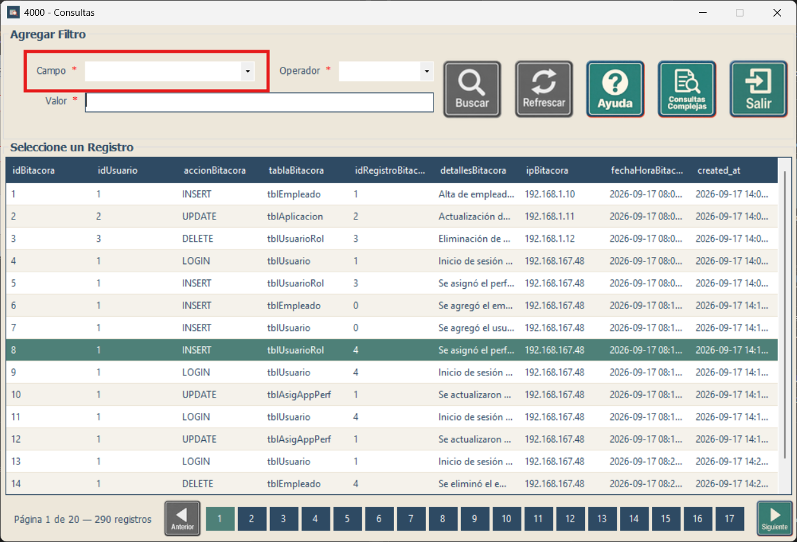
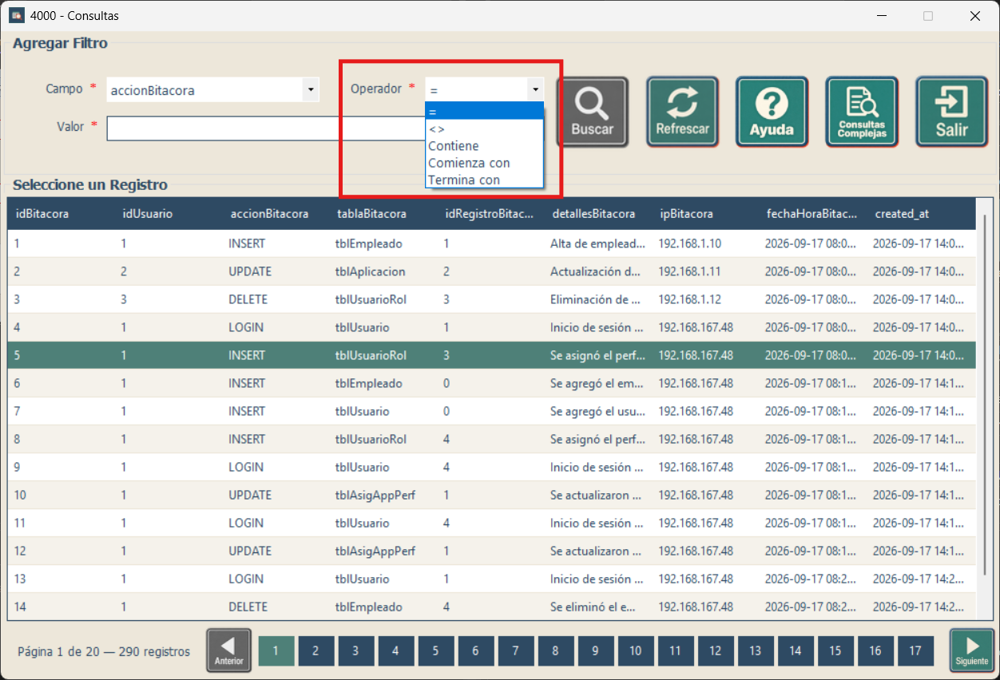
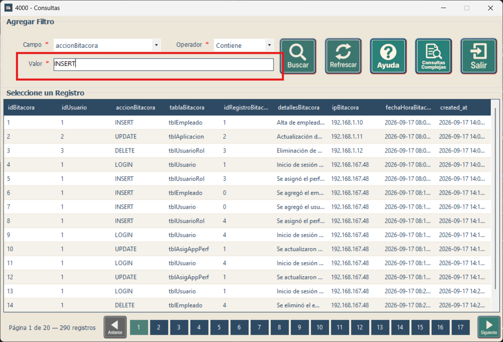
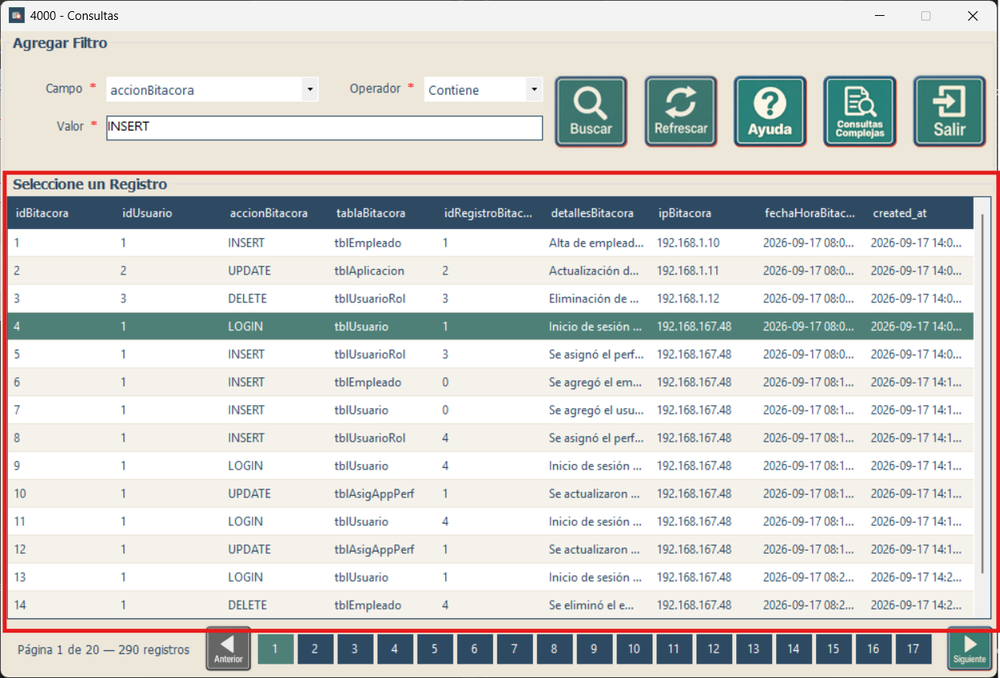

Capacitación - Consultas
Búsqueda rápida mediante filtros simples
Búsqueda rápida mediante filtros simples
Ver la guía de consultas complejas
Esta pantalla permite filtrar los registros mostrados en la tabla utilizando un campo, un operador y un valor. Es la opción recomendada cuando necesita realizar una búsqueda rápida sin combinar varias condiciones.
Un registro es una fila de la tabla. Un filtro es una condición para mostrar solamente las filas que le interesan. Buscar no modifica ni elimina los datos de esa tabla.

Abra la lista Campo mediante la flecha y elija la columna que contiene el dato que busca. Para seguir el ejemplo de las imágenes, seleccione accionBitacora, que contiene el tipo de acción registrada.
Si necesita encontrar una persona por su nombre, elija el campo de nombre que aparezca en su pantalla. El campo elegido debe corresponder al dato que va a escribir.

Abra Operador. Elija = para buscar un valor completo o Contiene para localizar una palabra o parte de un texto. En el ejemplo se usará Contiene para encontrar acciones que incluyan INSERT.

Haga clic en Valor y escriba el dato. En el ejemplo, escriba INSERT, sin comillas. Compruebe que Campo sea accionBitacora y Operador sea Contiene.

Para realizar otra búsqueda, cambie los datos y presione Buscar nuevamente. Para quitar el filtro aplicado y volver al listado actualizado, presione Refrescar.
Los operadores disponibles pueden cambiar según el tipo de campo seleccionado. Los campos de texto ofrecen =, <>, Contiene, Comienza con y Termina con. Los campos numéricos y de fecha ofrecen =, <>, >, <, >= y <=. Los campos booleanos ofrecen únicamente = y <>.
| Operador | Qué hace | Ejemplo |
|---|---|---|
| Igual a (=) | Muestra los registros cuyo campo coincide con el valor indicado. | Edad igual a 30: muestra los registros con edad 30. |
| Diferente de (<>) | Muestra los registros cuyo campo no coincide con el valor indicado. | Estado diferente de Inactivo: excluye los registros inactivos. |
| Mayor que (>) | Muestra los valores superiores al indicado, sin incluirlo. | Edad mayor que 30: muestra 31, 32, 33, etc. |
| Mayor o igual que (>=) | Muestra los valores iguales o superiores al indicado. | Edad mayor o igual que 30: incluye 30, 31, 32, etc. |
| Menor que (<) | Muestra los valores inferiores al indicado, sin incluirlo. | Edad menor que 30: muestra 29, 28, 27, etc. |
| Menor o igual que (<=) | Muestra los valores iguales o inferiores al indicado. | Edad menor o igual que 30: incluye 30, 29, 28, etc. |
| Contiene | Busca el texto indicado en cualquier parte del campo. | Nombre contiene ana: puede encontrar «Ana» y «Mariana». |
| Comienza con | Busca valores que comienzan con el texto indicado. | Nombre comienza con Mar: puede encontrar «María» y «Marcos». |
| Termina con | Busca valores que finalizan con el texto indicado. | Apellido termina con ez: puede encontrar «López» y «Pérez». |
Escriba enteros sin decimales, números decimales con punto (125.50), horas como HH:mm:ss y valores booleanos como 1, 0, true o false. Respete la longitud permitida del campo de texto.
Al cambiar Campo se borra Valor y se actualizan los operadores. Los errores de formato y los avisos de búsqueda sin resultados aparecen debajo de Valor; corrija el dato y vuelva a buscar.
La tabla muestra 15 registros por página. Haga clic en el encabezado de una columna para ordenar y vuelva a hacer clic para alternar la dirección. Para devolver un registro a la pantalla que abrió Consultas, haga doble clic en su fila o selecciónela y presione Enter.

| Botón o control | Función | Cómo usarlo |
|---|---|---|
| Campo | Indica qué columna se utilizará para realizar la búsqueda. | Abra la lista y seleccione el campo que corresponda al dato que desea encontrar. |
| Operador | Define la comparación que se aplicará al campo seleccionado. | Seleccione uno de los operadores disponibles en la lista. |
| Valor | Contiene el dato que será comparado durante la búsqueda. | Escriba el texto, número o fecha correspondiente al campo elegido. |
| Buscar | Ejecuta la búsqueda con el campo, operador y valor seleccionados. | Complete los controles del filtro y luego presione el botón. |
| Refrescar | Recarga la tabla y permite volver al listado actualizado. | Úselo para quitar el resultado de una búsqueda anterior o actualizar los datos. |
| Ayuda | Muestra este manual de uso. | Presiónelo cuando necesite consultar las instrucciones de la pantalla. |
| Consultas Complejas | Abre la pantalla para trabajar con consultas guardadas o con búsquedas que requieren mayor configuración. | Úselo cuando una consulta simple no sea suficiente para obtener la información que necesita. |
| Salir | Cierra la ventana actual. | Presiónelo cuando haya terminado de trabajar. |
| Anterior / Siguiente / páginas | Permiten desplazarse entre las páginas de resultados. | Use los controles inferiores cuando la tabla contenga más registros de los que se muestran en una sola página. |
| Situación | Qué puede hacer |
|---|---|
| Buscar aparece deshabilitado. | Seleccione Campo y Operador e ingrese un Valor. Si cambió Campo, vuelva a escribir Valor. |
| No aparecen resultados. | Revise la escritura y el campo elegido. Para texto, pruebe Contiene con una parte del dato. Para volver a ver todos los registros, presione Refrescar. |
| Aparece un mensaje rojo debajo de Valor. | Lea el aviso, corrija el dato según su formato y presione Buscar otra vez. Un aviso sin resultados no significa que se hayan eliminado registros. |
| La fila no se confirma. | Seleccione una fila de datos y use doble clic o Enter en la tabla. El encabezado de una columna sirve para ordenar, no para elegir un registro. |
| Se informa que falta una llave primaria, que es compuesta o que el identificador es nulo. | La selección no se confirma. Comunique el mensaje y la pantalla en la que ocurrió a la persona encargada del sistema; no elija otro registro suponiendo que representa al mismo. |
| Hay un aviso de conexión o la información no carga. | Compruebe que tiene acceso al sistema y vuelva a intentar. Si el aviso continúa, comuníquelo al soporte de su organización. |
Si necesita combinar condiciones o repetir una búsqueda guardada, continúe con la guía de consultas complejas.